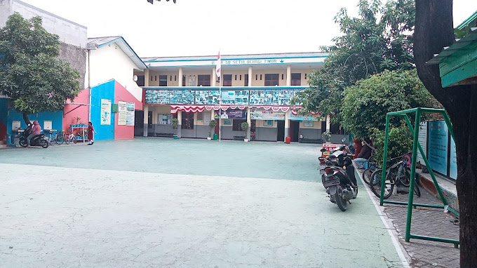

Selamat Datang di Website Sekolah SD SETIA
Terakreditasi A Sekolah Dasar Setia

SD SETIA mendampingi tumbuh kembang siswa dalam suasana aman, nyaman, dan penuh kasih
SD SETIA menghadirkan pembelajaran yang menyenangkan dan mudah dipahami.
Kami mendorong siswa berpikir kreatif lewat kegiatan belajar yang variatif.
Proses belajar diarahkan agar siswa mencapai tujuan belajar yang optimal.
SD SETIA mendampingi tumbuh kembang siswa dalam suasana aman, nyaman, dan penuh kasih.
SD SETIA menghadirkan pembelajaran yang menyenangkan dan mudah dipahami.
Kami mendorong siswa berpikir kreatif lewat kegiatan belajar yang variatif.
Proses belajar diarahkan agar siswa mencapai tujuan belajar yang optimal
SD SETIA mendampingi tumbuh kembang siswa dalam suasana aman, nyaman, dan penuh kasih.
SD SETIA menghadirkan pembelajaran yang menyenangkan dan mudah dipahami.
Kami mendorong siswa berpikir kreatif lewat kegiatan belajar yang variatif
Proses belajar diarahkan agar siswa mencapai tujuan belajar yang optimal
SD SETIA menyediakan berbagai kegiatan ekstrakurikuler seperti pramuka, olahraga, dan seni untuk mengembangkan bakat dan karakter siswa di luar kegiatan akademik.
Sekolah ini menerapkan pendekatan pembelajaran yang berpusat pada siswa, yang bertujuan untuk mengembangkan kemampuan berpikir kritis, kreativitas, dan kemandirian siswa.
• Juara 1 Lomba CERPEN tingkat Kecamatan Bekasi Timur
• Juara 1 Lomba IPA tingkat Kecamatan Bekasi Timur
• Juara 2 Lomba Matematika tingkat Kecamatan Bekasi Timur
• Juara 1 Lomba Matematika untuk kelas pintar
• Juara 1 Lomba Bulutangkis tingkat Kecamatan Bekasi Timur
• Juara 1 Lomba Scout Intelligent tingkat Kecamatan Bekasi Timur
• Juara 2 Lomba Catur tingkat Kecamatan Bekasi Timur
• Juara 3 Lomba Renang tingkat Kecamatan Bekasi Timur
Pada saat ini sekolah memiliki beberapa tingkatan kelas, yaitu kelas 1, kelas 2, kelas 3, kelas 4, kelas 5-A, kelas 5-B, kelas 6-A, dan kelas 6-B.
SD Setia memiliki fasilitas yang cukup lengkap untuk mendukung proses pembelajaran, termasuk ruang kelas yang nyaman, perpustakaan, ruang komputer, lapangan olahraga, serta Ruang UKS yang digunakan untuk penanganan kesehatan siswa saat diperlukan.
VISI SD SETIA
MISI SD SETIA
“Anak saya sangat senang bersekolah di SD SETIA. Guru-gurunya ramah dan suasananya menyenangkan.”

“Saya bangga bisa mengajar di SD SETIA. Kurikulumnya baik dan mendukung perkembangan karakter siswa.”
“Saya suka ikut kegiatan pramuka dan lomba-lomba di sekolah. Belajarnya seru!”
“Fasilitasnya lengkap, kelasnya bersih, anak-anak merasa aman dan nyaman. guru bahasa inggrisnya juga keren pak joko is the best”
“SD SETIA mengajarkan nilai-nilai disiplin dan tanggung jawab sejak dini. Sangat mendukung masa depan anak.”
“SD SETIA ngajarin saya 3 hal penting: jangan nyontek, jangan telat, dan jangan lupa bawa kotak pensil. Guru-gurunya super sabar, padahal muridnya rame kayak pasar."
“Lingkungan sekolahnya asri dan mendukung proses belajar. Anak-anak betah seharian di sekolah.”
“saya merasa SD SETIA punya visi yang jelas dalam pendidikan karakter dan akademik.”